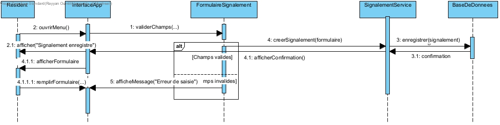
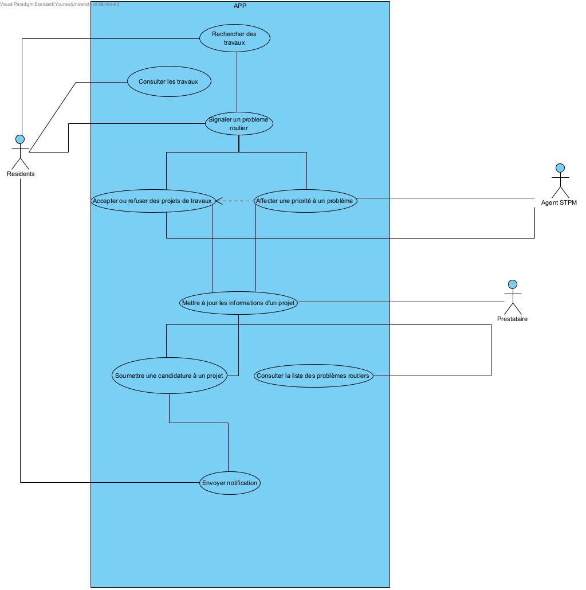
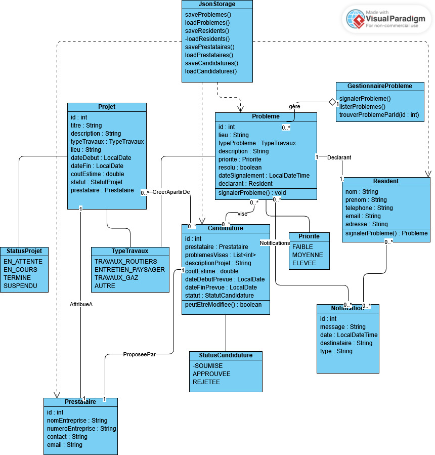

Projet MaVille - Application de Gestion des Travaux Publics
Session : Hiver 2025
Devoir : Devoir 2 - Architecture, Prototype et Implémentation REST
Table des matières
- 1. Cadre du projet
- 1.1 Description du projet
- 1.2 Hypothèses
- 1.3 Équipe
- 2. Modélisation du domaine
- 2.1 Glossaire
- 2.2 Diagrammes métier et de domaine
- 3. Modélisation des exigences
- 3.1 Besoins non-fonctionnels
- 3.2 Besoins fonctionnels
- 4. Prototype
- 5. Architecture logicielle et évolution du projet
1. Cadre du projet
1.1 Description du projet
Le projet MaVille vise à développer une application web permettant aux citoyens de Montréal de signaler des problèmes sur la voie publique (ex. : nid-de-poule, fissures, etc.) et de suivre l'état des travaux effectués par le Service des Travaux Publics de Montréal (STPM). L'application doit être intuitive, accessible et respecter les normes de sécurité et de confidentialité des données.
2. Modélisation du domaine
2.1 Glossaire
- STPM : Service des Travaux Publics de Montréal. Il centralise les signalements, attribue les priorités, valide les projets proposés par les prestataires, et gère la coordination générale.
- Résident : Personne vivant à Montréal. Il peut signaler un problème routier, s’abonner à des secteurs géographiques, et consulter les travaux en cours.
- Prestataire : Entreprise enregistrée pouvant consulter les problèmes signalés, proposer des projets et mettre à jour l’état de leurs interventions.
- Signalement : Déclaration formelle faite par un résident pour alerter le STPM d’un problème sur l’espace public. Inclut un lieu, un type, une description, et des coordonnées.
- Fiche de signalement : Enregistrement interne d’un signalement dans le système du STPM, contenant des informations enrichies (priorité, statut, affectation…).
- Priorité : Importance assignée par le STPM à un signalement. Trois niveaux possibles : faible, moyenne, élevée. Elle influence l’ordre de traitement.
- Candidature : Proposition soumise par un prestataire pour prendre en charge un ou plusieurs problèmes. Elle inclut la description des travaux, les dates, les coûts et le type d’intervention.
- Projet : Initiative validée par le STPM pour résoudre un ou plusieurs problèmes. Un projet est lié à une candidature acceptée, à un prestataire, à un statut d’avancement, et à des dates planifiées.
- StatutProjet : Phase actuelle d’un projet. Peut être : En attente, En cours, Suspendu, ou Terminé.
- StatutCandidature : État d’une candidature déposée. Peut être : En attente, Approuvée, ou Rejetée.
- TypeTravaux : Catégorie décrivant la nature d’un projet. Exemples : travaux routiers, entretien paysager, gaz/électricité, transports, signalisation, etc.
- Quartier : Secteur géographique administratif de Montréal utilisé pour localiser les problèmes et filtrer les projets.
- Filtre : Critère appliqué par un utilisateur pour restreindre les résultats visibles dans l’interface (par type, quartier ou date).
- Abonnement secteur : Préférence enregistrée par un résident pour être automatiquement informé des projets dans un quartier donné.
- API Montréal : Interface fournie par la Ville de Montréal permettant à l’application de récupérer dynamiquement des données sur les travaux publics en cours, via des requêtes HTTP.
2.2 Diagrammes métier et de domaine et
Diagramme d'activités (processus métier)

Diagramme de classes

Diagramme de séquence (signalement d’un problème)
Diagramme de cas d'utilisation
Justification des choix de conception : encapsulation, couplage, cohésion, abstraction
Le design du diagramme de séquence réalisé applique les principes fondamentaux d’encapsulation, de faible couplage, de forte cohésion et d’abstraction fonctionnelle.
-
Encapsulation : Chaque objet (par exemple
FormulaireSignalement,SignalementService) gère et protège ses propres données et comportements. Cela facilite la maintenance et la lisibilité du code, chaque entité étant responsable de ses états internes. -
Faible couplage : Le système limite les dépendances entre les composants : les objets communiquent uniquement via leurs interfaces publiques (ex :
InterfaceApputilise des méthodes sans connaître l’implémentation). Les composants peuvent ainsi évoluer indépendamment. -
Forte cohésion : Chaque classe a une responsabilité unique et claire. Par exemple,
SignalementServicene gère que les signalements, ce qui améliore la clarté et la robustesse du système. - Abstraction : Les utilisateurs interagissent à un niveau abstrait, les détails d’implémentation étant masqués derrière des appels de méthode. Cela favorise la modularité et l’évolutivité du code.
3. Modélisation des exigences
3.1 Besoins non-fonctionnels
-
Protection des données confidentielles
Description : L’application ne doit pas stocker ou afficher de données sensibles (comme les noms ou adresses complètes des résidents) sans autorisation explicite. Les signalements doivent être anonymisés du côté public.
Justification : Le respect de la vie privée est essentiel pour assurer la confiance des usagers, d’autant plus que ces normes reflètent celles de la Ville de Montréal. -
Capacité à gérer plusieurs signalements simultanément
Description : Le système doit permettre l’enregistrement et la consultation de plusieurs signalements en parallèle sans perte ou écrasement de données.
Justification : En période de forte activité (ex. : été), plusieurs résidents peuvent signaler des problèmes en même temps. L’application doit donc rester stable et cohérente. -
Bilinguisme (français/anglais)
Description : L’application doit être disponible en français et en anglais, avec une option de sélection de langue.
Justification : Cela reflète la réalité linguistique de Montréal et peut représenter une obligation légale. -
Rapidité de signalement
Description : Le parcours utilisateur pour signaler un problème ne doit pas excéder trois étapes, afin de limiter la friction et encourager l’usage.
Justification : Cela favorise l’usage de l’application et facilite son adoption par le plus grand nombre de résidents. -
Intégration d’une carte de Montréal (version ultérieure)
Description : L’application doit être conçue pour pouvoir intégrer une API cartographique (ex. : Google Maps, OpenStreetMap, etc.) pour localiser visuellement les signalements, en tenant compte des permissions d’utilisation et de la granularité des données.
Justification : La localisation visuelle améliore la compréhension et le traitement des signalements, ce qui est crucial pour les résidents comme pour la ville.
3.2 Besoins fonctionnels – Cas d’utilisation et descriptions
Acteurs
-
Acteur principal :
Résidents – habitants de la ville ; utilisateurs principaux du système. Ce rôle inclut aussi l’AgentSTPM et le Prestataire. -
Acteurs secondaires :
- AgentSTPM – Reçoit les plaintes/signalements, analyse leur validité, et gère la priorité/acceptation.
- Prestataire – Intervient sur les problèmes approuvés : propose des projets, effectue les réparations, met à jour l’avancement.
Principaux cas d’utilisation
- Rechercher des travaux : Permet au résident de chercher des travaux spécifiques par quartier ou par type (routier, gaz, signalisation, etc.) pour accéder rapidement à l’information ciblée.
- Consulter les travaux : Le résident visualise les projets planifiés ou en cours, filtrables par quartier ou type. Il peut s’informer et anticiper les impacts sur sa mobilité.
- Signaler un problème routier à la ville : Le résident utilise l’application pour signaler un problème/anomalie dans sa zone, en remplissant un formulaire détaillé.
- Affecter une priorité à un problème : L’AgentSTPM analyse les plaintes soumises et les classe par ordre de priorité.
- Accepter ou refuser des projets de travaux : Si la plainte est approuvée par l’AgentSTPM, elle est assignée à un prestataire pour intervention.
- Mettre à jour les informations d’un projet : Après acceptation, le prestataire peut modifier la description, la date de fin, ou le statut du projet.
- Consulter la liste des problèmes routiers : Permet au prestataire de voir les problèmes à traiter, filtrables par type, quartier ou date de début.
- Soumettre une candidature à un projet : Le prestataire propose une solution pour un problème et confirme qu’il prendra en charge l’intervention.
- Envoyer une notification : Le résident reçoit une notification à chaque étape importante (prise en compte, modification, résolution…).
Scénario type
Le résident ouvre l’application, se dirige vers “signaler un problème routier” et remplit un formulaire (type, localisation, description…). Il envoie le formulaire, qui est analysé par l’AgentSTPM (validation ou refus, affectation d’une priorité). Les projets acceptés sont transmis à un prestataire qui peut consulter, candidater ou mettre à jour les problèmes/projets. À chaque étape clé, le résident est notifié de l’avancement ou de la prise en compte de sa demande.
Extensions (exceptions possibles)
- Localisation incorrecte
- Informations manquantes
- Photo floue/non lisible
- Problème déjà attribué
Préconditions
- L’utilisateur a accès à l’application
- Agent authentifié
- Une plainte doit avoir été soumise
- Droit d’accès élevé pour l’Agent
Postconditions
- Les plaintes/signalements sont stockés dans le système
- Approbation attendue par l’Agent ou le Prestataire
4. Prototype
5. Architecture logicielle et évolution du projet (Devoir 2)
Dans le cadre de cette deuxième itération du projet MaVille, l’équipe a poursuivi le développement en approfondissant l’analyse des exigences, la conception de l’architecture logicielle et la mise en œuvre d’une application fonctionnelle basée sur une API REST. Cette section présente l’ensemble des changements, améliorations et choix techniques réalisés : revue des besoins, justification du style architectural, description des principaux composants, illustration du modèle objet, et organisation du développement collaboratif.
L’objectif est de démontrer la capacité du prototype à répondre aux enjeux identifiés (communication, coordination, persistance, notifications) tout en assurant la modularité, la maintenabilité et l’évolutivité du système. La structure du projet est expliquée de façon à préparer une extension future vers des interfaces graphiques ou mobiles.
5.1 Révision des exigences et feedback
Suite à la première livraison du projet MaVille, l’équipe a pris en compte l’ensemble des retours du client, des auxiliaires et de l’énoncé révisé pour faire évoluer l’application dans cette seconde itération :
- Clarification des besoins et des acteurs : Nous avons affiné la définition des rôles (résidents, prestataires, STPM), ainsi que les interactions entre eux, pour que chaque fonctionnalité corresponde précisément aux attentes du client.
- Refonte du cycle de vie des entités : L’ensemble des cas d’utilisation (signalement, validation, candidature, projet, notifications) a été retravaillé pour intégrer les statuts intermédiaires et la validation manuelle par le STPM, conformément à l’énoncé.
- Passage à une architecture REST complète : Toutes les interactions de l’application se font désormais via des endpoints REST (GET, POST, PUT), séparant clairement l’interface (menus CLI) de la logique métier et de la persistance.
- Gestion de la persistance par fichiers JSON : Chaque entité (problème, projet, candidature, résident, prestataire, notification) est désormais stockée dans un fichier dédié, garantissant la conservation des données même après fermeture de l’application.
- Amélioration de la navigation CLI et de la validation utilisateur : Les menus principaux et secondaires ont été simplifiés et sécurisés (validation des entrées, messages d’erreur explicites, retour au menu principal en tout temps).
- Prise en charge des notifications : Un mécanisme de notification simple a été ajouté pour informer les résidents et prestataires des changements de statut de leurs signalements ou projets.
- Documentation et tests : Le README a été mis à jour, des instructions d’utilisation et de tests unitaires ont été ajoutées, et la gestion du projet via GitHub a été renforcée (branches, issues, release).
- Intégration des feedbacks client : Nous avons systématiquement intégré les suggestions, telles que l’automatisation de l’affectation des priorités, l’abonnement automatique aux notifications, et la gestion des statuts des entités.
L’ensemble de ces améliorations garantit une solution robuste, extensible et alignée avec les attentes du client, tout en posant les bases pour une extension future.
5.2 Définition et justification de l’architecture logicielle
- Style architectural retenu :
L’architecture retenue pour MaVille est une architecture en couches (n-tiers), enrichie d’une approche REST et d’une inspiration MVC pour l’organisation du code. Le cœur métier est isolé dans des gestionnaires et des modèles, l’interface utilisateur est gérée via une CLI (menus), la communication inter-couche se fait par une API REST, et la persistance se fait par stockage JSON simple (un fichier par entité). - Justification :
- Séparation claire des responsabilités pour chaque couche (UI, services métier, stockage, API)
- Facilité d’évolution et de maintenance : on peut remplacer l’UI ou le backend indépendamment.
- Interopérabilité : d’autres clients (web, mobile) pourraient réutiliser l’API REST sans changement majeur.
- Testabilité et réutilisabilité : chaque couche ou composant peut être testé séparément.
5.3 Diagramme d’architecture (composants principaux)
Diagramme d’architecture globale de MaVille (Devoir 2)

Explication de l’architecture container de MaVille
Ce diagramme représente l’architecture logicielle du projet MaVille selon le modèle “container” (niveau C4). On distingue clairement les différentes couches et composants du système :
- Utilisateurs (Résident, Prestataire, STPM) : Interagissent via l’interface en ligne de commande (CLI) pour signaler un problème, consulter ou gérer des travaux.
- Interface CLI MaVille : Point d’entrée de l’application pour tous les profils, offrant un menu console interactif.
- Client REST (HttpClient) : Fait le lien entre la CLI et le serveur API MaVille, transmettant les requêtes via HTTP en JSON.
- Serveur API MaVille : Composant central qui expose les endpoints REST, orchestre la logique métier et assure la cohérence des traitements.
- Gestionnaires Métiers : Modules spécialisés qui gèrent la logique propre à chaque entité du domaine (problèmes, projets, candidatures, notifications).
- Database (Stockage JSON) : Système de persistance utilisant des fichiers JSON pour conserver toutes les données du système, assurant ainsi la continuité même après redémarrage.
- API Info-Entraves Montréal : Service externe consulté par le serveur pour enrichir l’information sur les travaux en cours, assurant une actualisation des données publiques.
Ce découpage favorise la modularité, la séparation des responsabilités et la facilité d’évolution de l’application. Il permet également d’intégrer de nouveaux clients (ex : application web ou mobile) en réutilisant la même API REST, et garantit la robustesse du système par l’isolation des couches.
5.4 Diagramme de classes orienté objet (version 2)
Diagramme de classes - Modèle orienté objet (v2)
5.5 Implémentation REST et persistance
L’application MaVille s’appuie sur une architecture RESTful pour l’intégralité des interactions entre le client (interface CLI) et le serveur. Chaque fonctionnalité métier est exposée via des endpoints HTTP clairs, facilitant à la fois l’utilisation par différents clients (CLI, futur site web ou app mobile) et la maintenance/extensibilité du système.
-
Principaux endpoints REST :
GET /api/problemes– Liste tous les problèmes signalés dans le système.POST /api/problemes– Permet à un résident de signaler un nouveau problème.PUT /api/problemes/:id– Met à jour les informations ou le statut d’un problème existant (ex. : résolution, changement de priorité).GET /api/projets– Récupère la liste complète des projets de travaux validés ou en cours.POST /api/projets– Ajoute un nouveau projet (suite à validation d’une candidature ou d’un besoin par le STPM).PUT /api/projets/:id– Met à jour un projet (ex. : dates, description, statut).GET /api/candidatures– Liste toutes les candidatures déposées par les prestataires.POST /api/candidatures– Permet à un prestataire de soumettre une nouvelle candidature à un ou plusieurs problèmes.PUT /api/candidatures/:id– Permet la modification ou l’annulation d’une candidature (tant qu’elle n’est pas validée).GET /api/notifications– Liste les notifications envoyées aux utilisateurs (ex. : confirmation de prise en charge, changement de statut).POST /api/notifications– Ajoute une nouvelle notification ciblée.PUT /api/notifications/:id– Marque une notification comme lue ou modifie son contenu en cas d’erreur.
Tous les échanges se font en JSON, garantissant l’interopérabilité et la simplicité d’intégration avec d’autres systèmes.
Ce découpage rigoureux entre API REST et couche de persistance positionne MaVille comme une solution moderne, évolutive et conforme aux standards industriels, tout en facilitant la maintenance, les tests et l’ouverture vers d’autres plateformes ou services municipaux à l’avenir.
Équipe
Matricule : 20256168
Discord : younes_lgha
GitHub : YounesLagha
Matricule : 20288301
Discord : dhxft
GitHub : dhxft
Matricule : 20299978
Discord : rayyan20062
GitHub : Rayyan-Oumlil
4.3 Instructions d'utilisation
Exécution via le JAR (recommandé)
1. Téléchargez le fichier maVille-1.0-SNAPSHOT.jar depuis la section "Releases" du projet GitHub.
2. Ouvrez un terminal et placez-vous dans le dossier où se trouve le fichier JAR.
3. Exécutez la commande suivante :
java -jar maVille-1.0-SNAPSHOT.jar
Alternative : Utilisation avec un IDE (IntelliJ, VSCODE, etc.)
- Importez le projet en tant que projet Maven dans votre IDE préféré.
- Lancez la classe
ca.udem.maville.Main(clic droit > "Run" ou équivalent).
Navigation dans l'application
- Au démarrage, choisir le profil (Résident ou Prestataire ou STPM)
- Naviguer dans les menus avec les numéros
- Utiliser "0" pour revenir au menu précédent
- Suivre les instructions à l'écran pour les saisies
- Choisir "Quitter" dans le menu principal pour terminer
Conclusion
Ce prototype évolué démontre la faisabilité de l’application MaVille, intègre l’architecture REST, et pose les bases d’une application maintenable, modulaire et extensible pour la gestion des travaux publics à Montréal. Les contributions de chaque membre, la rigueur du développement collaboratif, et l’intégration des retours client assurent la qualité de la solution livrée.